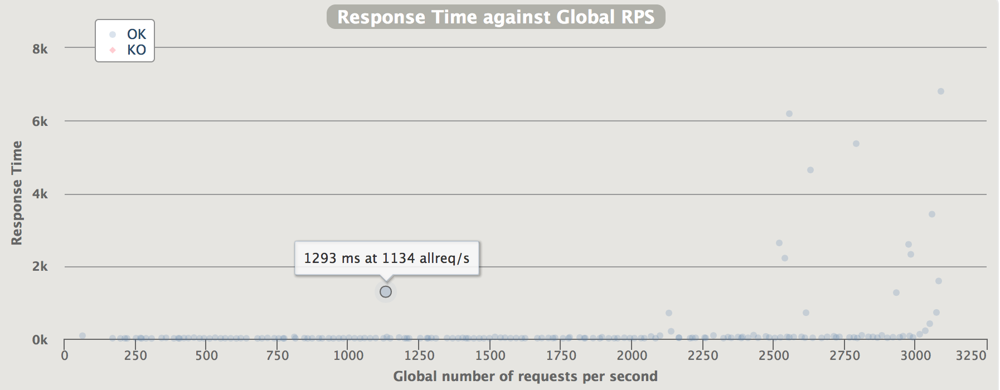
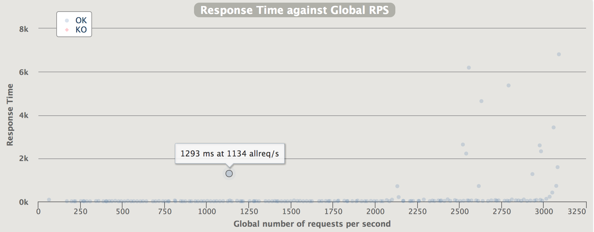
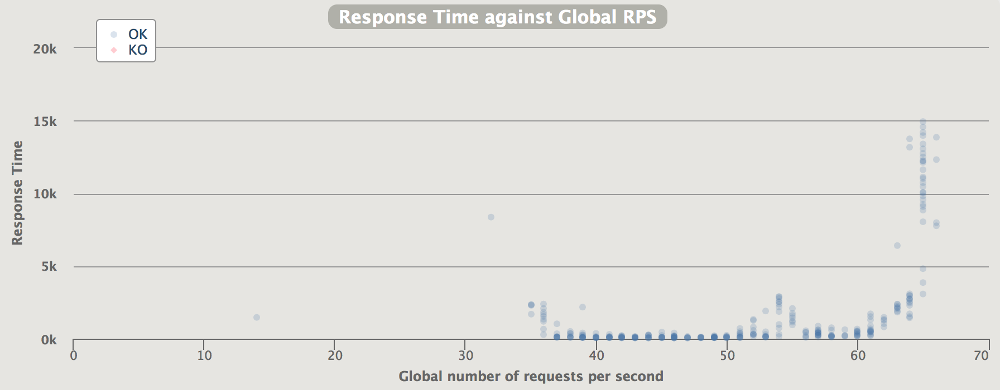

30/Dec 2017
Raspberry Pi vs Tinker Board: node.js performance
Preface
Recently I’ve bought both Raspberry Pi and Tinker Board to experiment with microservices performance, cause in the cloud you never know how busy your host is. As an application under test I’ve found just perfect match - Dockerised Microservices Calculator by Jeremy Cook written on node.js. It’s dockerised microservices calculator that has been designed to evaluate simple and complex mathematical expressions with any valid user provided expression using the order of operations (or operator precedence) rules. You should definitely check it out if your’re interested in playing with microservices.
Node.js installation process is the same for both platforms(since they’re just Debian forks) and as simple as executing two lines in the shell:
curl -sL https://deb.nodesource.com/setup_9.x | sudo -E bash -
sudo apt-get install -y nodejs
Unfortunately node for ARM architecture compiled with frame pointers omission so there are problems with flame graphs plotting: regular perf output provides no information to Brendan’s scripts and
perf record -F 99 -p {$PID} -g --call-graph dwarf
generates huge amount of data (with disk I/O oprations) which drastically decrease performance of Raspberry. In addition those dwarf traces can’t be properly handled by FlameGraph scripts - everything except kernel calls is just flat so overall efficiency of flame graphs on ARM is somewhat questionable.
But even with those limitations there’re some interesting findings worth sharing.
Comparison
Load tests were performed with Gatling testing tool and overall approach was pretty straightforward:
- Tune OS
- Start node exporter and configure Prometheus with Grafana
- Execute healthcheck load test
- Check saturation point and monitoring results
- Execute calculator load test which evaluates expression (2*(9+22⁄5)-((9-1)/4)^2)+(3^2+((5*5-1)/2))
- Check saturation point and monitoring results
- Report analysis
Saturation points
Healthcheck test
Raspberry Pi:
 Tinker Board:

On simple healthcheck test Tinker Board is more than 2x times faster with ~3000 RPS while Raspberry have only ~1350 RPS
Tinker Board:

On simple healthcheck test Tinker Board is more than 2x times faster with ~3000 RPS while Raspberry have only ~1350 RPS
Calculator test
Raspberry Pi:

Tinker Board:
 For calculator test we can see similar picture: Pi with ~65 RPS vs ~130 RPS of Tinker Board
For calculator test we can see similar picture: Pi with ~65 RPS vs ~130 RPS of Tinker Board
Monitoring info
Raspberry Pi:
 Here we have an evidence that it’s really hard to get something more than ~6 MB/s as many users reported
Here we have an evidence that it’s really hard to get something more than ~6 MB/s as many users reported
Tinker Board:

Flame graphs
As I previously mentioned flame graphs not so usefull for this case but something we can see here:
Raspberry Pi: Tinker Board: Tinker Board can handle context switches a lot faster than Raspberry Pi but since dwarf adds huge amount of overhead and overall throughput of Tinker Board is higher - this information is not something that we can rely on.
Conclusion
- Overall Tinker Board 2x faster than Pi
- Tinker Board can handle twice as more Context switches as Pi can
- Tinker OS poorly optimised for disk IO which obviously slows everything down and drasctically decrease SD card lifetime.
P.S.: Useful commands
Stats on system calls and their execution time
strace -p {$PID} -c -w
Interrupts monitoring
watch -tdn1 cat /proc/interrupts
itop
Perf profiling without sudo privileges:
sudo sysctl kernel.perf_event_paranoid=0
sudo sysctl kernel.kptr_restrict=0